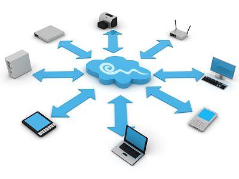

Information technology (IT) is the application of computers and telecommunications equipment to store, retrieve, transmit and manipulate data,often in the context of a business or other enterprise
The term is commonly used as a synonym for computers and computer networks, but it also encompasses other information distribution technologies such as television and telephones services.

Based on the storage and processing technologies employed,
it is possible to distinguish four distinct phases of IT
development:
pre-mechanical (3000 BC – 1450 AD), mechanical (1450–1840),
electromechanical (1840–1940) and electronic (1940–present).
This article focuses on the most recent period (electronic),
which began in about 1940.